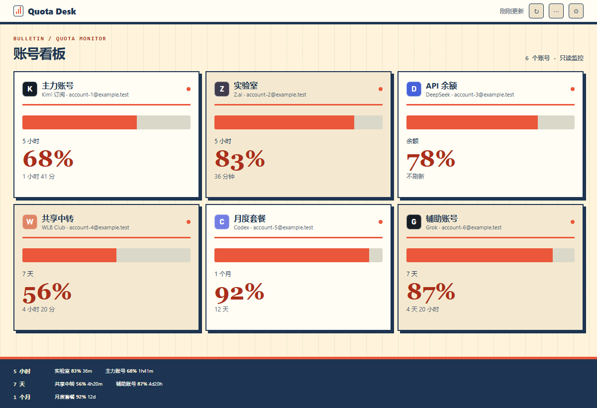
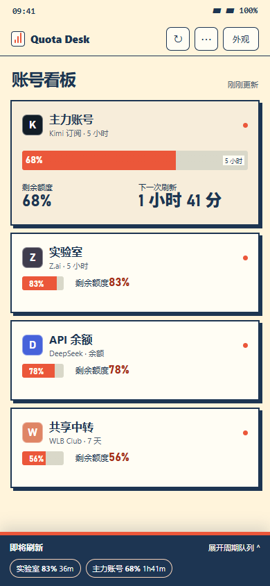

07 / DESKTOP + NATIVE ANDROID + WEBVIEW
新刊放送
把额度与刷新时间做成一份随时更新的快报。纸色大标题、蓝色编辑标记和朱红焦点让手机读数有优先级。

扫码页 · 原生相机覆盖层相机画面保持中性暗色；主题只控制准星、提示与操作键。
扫码成功进入远程看板，主题身份保持一致。

原生设备卡像刊物封面WebView 把关键余额放大成头条扫码页使用印刷裁切角标
右上角「外观」打开同一台设备的主题选择；原生层与网页层共用主题 ID，系统栏只取最终主题的亮暗属性。